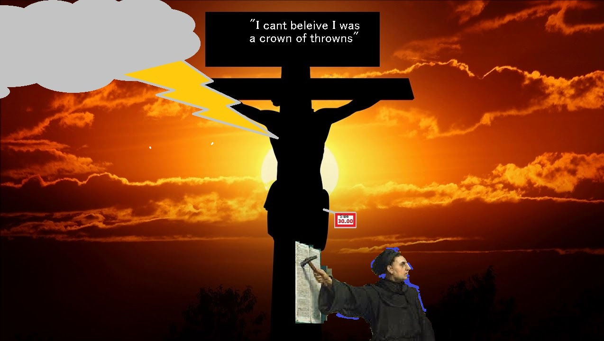
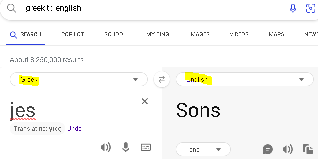

texstr
TO Hell with Jesus
Sections
Intro
Personal
JesusIsRacist
ThrowOut
Put a Dollar in da Boxa
hisStupidJudgements
Have you ever been so down in your life, you pray to God, and things seem to
get worse? This is not God "testing your faith", but rather the realization of God's personality"
Does God like torturing us?
God is an asshole?
The purpouse of this article is to clarify that with you.

Firts let us examine the conversation between Jesus & The young wealthy guy
Give everything away to my freinds over there and follow me:
My reply If i was that rich kid
HEY Jesus, give up everything you own and give it to me. Even you're title as "son of God", I will take that too because I am also a child of God you wicked harpy
.
now in regards to "‘Do not murder, Do not commit adultery, Do not steal, Do not bear false witness, Do not defraud, Honor your father and mother.’lets break it down
1. Moses and God killed plenty of people, don't justify any of it, some of it was murder.
2. King David sent a man's wife to the strong line so he could bang his big TIttied wife, the guy's wifes, not Davids. And the Christian excuse is
"oh such a holy man who still seaked gods heart fell into sin", no, no, I am telling you NO. I grew up a good looking guy, I ALWAYS SAID NO when
someone's wife caqme on to me. David went seeking and even killed a guy on the front line.
His kindgdown should havce been taken there and then.
But no, because The God of Israel likes adultery SO MUCH he is willing to let his QUOTE UN QUOTE SON SUFFER AND WATCH AS HE GETS CUCKED..
oh yea Kanye west ist just one name off the top of my head. Your Jewish brothers stuck a nigger in a worship ceremony just to disrepect you.
Show them more mercy jesus? GO ahead, its not my problem you fucks.
Why doesn't APAC have to register as a foreign actor? They play a huge part in our elections but don't represent anyone but Israel. Why do we worship a the God that land? And his rotten son, who will call you a filthy dog.
Beg at his feet? You are a dog and no Jew
Lord did I prophesy in your name? Get away from me DOG
Y'know what's funny though, at his death Moses said "Go to the gentile Dogs" and they tore him up. Servers him right.
You won't see that in the bible because that was going on in his head "I can't beleive I was a crown of thorns", yes Jesus you lead
many people, even nations, astray.
What did the Greek and Romans Gods give?
Democracy
Republicanism
Architecture
Sciences
Even most of our medical terminology comes from them
And I do believe Europe would have invented the printing press without Christianity. I believe the only reason it spread is because of the belief in the resurrection of the dead. Without that Europe would not be Christian, IE Slaves to Jews.
The Holy Spirit has spoke through me, It was not me talking. It was Jesus Christ talking. His presence used to comfort me BUT WHY? WHY DO I NEED THAT? Because I sacrificed EVERYTHING to let you do that and what is my reward?
Ruined relationships? Burnt Bridges and opportunity?
Thanks Alot GOD, THANK YOU SO MUCH FOR MAKING ME ONE OF YOUR PROPHETS. ITS VERYTHING I'VE EVER WANTER. Especially because I am like the early church leaders, very masochistic and praising God everytime i get wipped.
JESUS IS NOT TO TRUSTED. He has enslaved the world to Judaism and thinks it's funny how wicked they are.
JEWS ARE RIGHT To reject him and you should do.
But anyway, Jesus Christ is not to be trusted. I'm glad Moses sent him to the dogs, LIKE THAT ONE SAMARATIN LADY THAT BEGGED FOR CRUMBS? OH LORD SON OF GOD, JESUS YOU HYPOCRITE.
As a human being you should reject Jesus Christ based on principle, let him be alone in the afterlife. Let him rule his heavenly kingdom by himself
Like IDC. "Long and prosperous life" is that Jeremiah 29;11 or a star trek reference. That's a lot Jesus, Thanks because at the age of 23 I thought people would kill me.Now about this prosperous life, I have been diligent as proverbs says. I use my diligance to spend time & energy on this productive
This cutthroat world were people Rightfully deceive in business transactions
"OH NO ITS SOO EXPENSIVE" then brags about what a deal he got, that's in proverbs.
So you want me to follow a book that venerates the 10 commandments then gives excuses for breaking them, kind of like the talmud.
How are the backwards teachings of Jesus Christ going to make me prosper? Give me all your wealth and follow me?
"You are a fool for storing all they grain because deathf calls for you today" to a human being that had no idea when he was going to die, meet someone he'd give it as an inheritance, or even had a child.
Jesus is very judgemental and I am someone that believes in standards for standards. And that's why Moses told him to go to the gentile Dogs, they were barking and hungry.
Jesus Christ ruined my life. My early 20s was years of worrying about being a false prophet. Idc any, real or false prophet, Jesus ruined my life. MOSES IS COOL FOR KILLING HIM. But does that mean the God f Israel is the only God? Idk I think maybe he had a role in Greek and Roman societies. You know the ones Jews accursed Christians of incorporating their religion with when most Jews have been doing so since Egypt and Babylon.
<
W.e just saying. Do not worship Jesus. He favors Jews that hate him over Christian Dogs that love him. If he chooses you to be a prophet he will fuck you over. Thank God for the law of Moses. The only reason you should have a Bible is to know the Jews plans.
They want to build that temple, after Elon pissed off the Twitter Jews, once that breadcrumb of neutolink being critical for their Messiah those on the right like netanyahu Shapiro got all buddy buddy with Elon.
There are no good Jews, left, right, middle, and out there.
There is no such thing as a good Jew, they take over media, financial & educational institution, and government.
GET JEWS AND ISRAELIS OUT OF POSITIONS OF POWER.
RED OF BLUE, DO NOT VOTE JEW
As a prophet, whom was moved by the Holy Spirit.
I've heard the thundering and waterfall voice of God
Moses's parched and deep voice
The fallen angel's high-pitched child-like screech with razor sharp teeth and part computer
I've let God puppet me, he has shown me some very funny stuf, and warned me, sometimes talking VERY CLEAR.
People like Ben Shapiro want people to believe the Bible so they can control them, because they realized they can't control people who do not think they're specially chosen by God.
/section>
I AM TELLING YOU TO THROW AWAY YOUR BIBLES.
If you want rip out genesis, the parts that warn you about Jews, revelation is the Jewish/satanic playbook to force prophecy.
"For the prophecy came not in old time by the will of man: but holy men of God spake as they were moved by the Holy Ghost" 2Peter1:21
This is true at 20 years old I was holding back something I saw 3 years prior. I couldn't take it anymore and had to get it off my chest.
AFTER THAT:
"Holy shit am I a devil"
"Am I prophet or a false one"
Even my mom was saying,"WHAT IS THAT". The Holy Spirit was radiating off my body. I did not have to open my mouth to testify about Jesus.
All I wanted was a normal life. So I hope you can see why I am angry with God and Jesus and JEWS. You're God belonged to the Greek and Romans too. They ruled you
The Jewish God is a CUCK that got fucked by a Roman soldier. Jews that to believe in Jesus want to believe this lmao. The Jewish God is a CUCK and so is Jesus.
Jupiter and Zeus(Jesus is the son of Zeus) took Judea and laughed at Elohim begged them to be sexual anused because that's what turns him on. The holocaust? Same thing. The Jewish God is a sick demon and that's why you see his believer making the most disgusting pornography.
The jews will alway talk about how the nazi's boycotted them
Anti German Boycotts
Slavery in America was justified by slavery in Egypt.
You did it to uss in egyot now it's your turn
People that want to make me suffer for something I had nothing to do with are self-righteous.
"Oh you reap the benefit," not my family. Hitler tore them apart anyone who did not join was executed. If lucky you got to leave with your belongings, but property is not something you can travel with.
Is any single person putting pressure on the government of Germany? JEWS WERE NOT THE ONLY VICTIMS and y'know what I don't want to be anyway.The Nazis stole from my family, murdered them off, and chased them away. Again NOT JEWISH, Okay maybe grandma but that's it and she denied it. American Jews belong in Israel, ALL JEWS BELONG In Israel. The ones who are not there BELONG IN HELL
Don't make this about politics or race. Cops are out of control.
I'm white
I'm racist (thanks to jail)
I have been beaten up by cops
I can relate very much to what that lady had to go through. They went from smiling to "I'll shoot your fkn face" real quick. She sensed the fear and anger, demons, and rebuked them. This guy did not take it as a threat, he hates Jesus Christ and Christians. He is a devil, ignore the blonde hair and look at the nose.
Jews are known for killing their prophets. I must say most Americans that identify as Christian are no better.
A man with earthly power actually believed he had divine authority to take what is mine and give it to a slut and a welder.
When you read proverbs you will notice a lot of human anatomy(eyes, lips, heart, feet). The bullet did not miss, it hit the ear. You can call it divine intervention all you want, I see it differently.
I'm not a TDS Person, I tell my pro-trump family my reasons to be reluctant. Biden was a 100% NO
I'm very comfortable with RFK and if Democrats try to prop up someone else that will just steal votes from him.
Everyone wanted Bernie in 2016 but somehow Hilary ended up on the ticket and that's the reason Trump won in 2016. If Democrats try to prop up someone that isn't RFK it will just steal votes from him and Trump might win.
If Trump wins there is still good that can come from it. If you're a Democrat and cannot see that you have no right to insult my intelligence because you're not that bright yourself.Trump supporters, aka chisitians that support israel will die over the ocean. They are a common enemy
#1 you see them as christo-fascist. #2 I do not see them as christian at all for not heedin the warnings of the jews.
Who does a messenger hate more?
The person who didn't believe him, laughed at him, and
walked away(Thats you Democrats)
Or
The person that attacked him to prove to the world that he is lying.Even going as far as throwing him in a cell with a rapist?
"You can't know the exact date but you can see the signs of the times...", this guy is fucking with us
Personally, I want to ban christianity all together. I want it out of my life, however there is SOME TRUTH
- The symbolism of stones and bread
- Historical records before, during, and after Jesus
- The Holy Spirit IS REAL, and will acknoledge Jesus Christ as the Messiah
- The Serpent is real,the devil, the dragon(hint that false prophet LOOKS LIKE A LAMB:JESUS SPEAKS LIKE A DRAGON:SATAN)/li>
- Prophecy is real and the only way to stop it, if possible is to nuke jerusalem under the water over and over.
in my early 20's people would tell me i should right a book, because of provocative ideas or something. ALOT of people told me to write a
book. My fear is that even if i follow the protocols of zechariah, people will turn it into a religious doctrine, a holy book, "The words of God". I do not want to start a cult, I do not want to be muhummaid or joseph smith, or even nostrodamous. It is my beleif that only false prophets are remembered in recent history. No one talks about where that word bubble meme came from? was it just to piss off the muslims? or did hitler put words in the mouths of prophets and thats where that came from?
These next verses show the extortion part of Christianity
YESSSS GOYUM GIVE UP ALL YOUR WEALTH - Jesus
You cannot serve God and money (Matthew 6:24)“No one can serve two masters, for either he will hate the one and love the other, or he will be devoted to the one and despise the other. You cannot serve God and money.”
YES GOYIM DO THE LABOR FOR FREE - Peter
Don’t be greedy for money (1 Peter 5:2) “Be shepherds of God’s flock that is under your care, serving as overseers-not because you must, but because you are willing, as God wants you to be; not greedy for money, but eager to serve;”
YOU BETTER HAVE MY FUCKING MONEY -Paulie
On the first day of every week, each one of you should set aside a sum of money in keeping with your income, saving it up, so that when I come no collections will have to be made.
The son of God Jesus was not the son of the jewish God, Its possible he was the son of a greek God. It explains Alot, but not him
being a self-defeating cock-sucker.
#1 there is no hebrew name for the word Jesus, they use Yeshua, which is Joshua(the conquerer after Moses, who they favor)
#2. His name "Jesus" more likely means the son of Zues, Not Yawhew the CUCK. Why do you think yahwhew kill him? it wasn't his child.
OR IT WAS HIS CHILD, AND HE FUCKED HIS OWN MOM. Something Jewish Scholars in academia LOVE TALKING ABOUT.
A jewish Academic named Leo Steinber wrote a Peer-Reveiwed Paper about Jesus wanting to fuck his own mom. https://www.stevenmunich.com/documents/index.html
#3 but he didn't want to look like an idiot infront of his small pathetic paeople so we played along with it
#4 The Jewish God is Evil, look at what he did to Job, a man who DID EVERYTHING RIGHT. God punishes him, then says "your rightouness comess
from me". THE JEWISH GOD IS A PEICE OF SHIT AND I REFUSE TO ACKNOWLDGE HIM ANYMORE.
As far as im concerned Jesus was the son of of a different God.
GREEK:

ROMAN:
 Below are some proverbs from Eastern Europe
Below are some proverbs from Eastern Europe
Listen to what your ancestors had to say about jews, not what jews say about your anscestors, that is all projection anyway.
Jews helped the british and ran trade routes including slavery.
A Jew is nourished by mischief.
Where a Jew walks, men’s tears flow.
Run with Jews, wake up with sins.
A Jew stinks as badly as he looks.
A Jew is like a pig: nothing hurts, but he keeps squealing.
A Jew promising healing is like Death promising life.
What ends up in a Jew’s hands, disappears.
Avoid friendship with a Jew and you will avoid trouble in life.
Jewish praise is worse than scolding.
Trust your eyes, not Jewish words.
Jews carry lies like fields carry wheat.
A Jew sinks the truth with gold, but it always floats to the surface.
When you weep with joy, a Jew weeps with envy.
Around rich Jews, men wear rags.
Punch a Jew in the face and he will accuse you of murder.
When a Jew appears in your village, tie your tongue and unleash your dogs.
If you want to live, drive away the Jew.
The jew will always tell you what happend to him, but he wont tell you why.
These are some I made:
A Jew only admits his wrong doings in moments of pride.
A jew will say Jesus was a Jew and then replace christ with himself.
VERY IMPORTANT TO REMEMBER THIS ONE:
Punch a Jew in the face and he will accuse you of murder.
You might as well murder him, if you don't you will regret it. You will spend the rest of your liie
locked up by his dogs while he wickedly laughs at the thought of you suffering and getting raped
Like this blob and his harpy wife, their son was killed by nicholas
Did they vote for open borders? How many times did they laugh when a white mother was killed or a white man or
child killed themselves?

I watched the video, He told a kid to get out. He targetted that teacher and NOT BECAUSE of his fake idenity which is surrounded by neurotism. If that teacher did not bull or rape him, he
Cruz target that teacher FOR FUCKING WITH HIM, either physically or emotionally, probably both. deserved it for being a JUDE.
Im sure nicholas cruz questionaed the validity of the holocaust and that set him off.
Don't even get me started on the court case, that judge lost so much decorum and control over her courtroom. The judge in
Darrel Brooks Trial did an EXCELLENT Job compared to whoever that lady was. She let emotions overide the facts of the case and
could have caused a mistrial or an appeal.
oh she did so good helping those families deal with their emotions
At the same time she ruined the case against him, the judge he had a biased and the evidence?!?! "he looked up teenager porn, thats CP", DUDE
IS A FUCKING TEENAGER. "Oh look at his google results he was shopping for a nazi flag" SO WHAT? You do not know his intentions, the swastika is a symcol
used all over there world, people think it looks cool, and for all you know cruz was just doing research. That trial taught me that the government
collects EVERYTHING you do online to use against citizens in court. This is a violation of the 4th amendment, OUR PRIVACY DOES NOT BELONG TO FACEBOOK, GOOGGLE
YOUTUBE, ETC.
And you kno what is real disgusting about the parkland shooting, all the kids using the death of their classmates as a platform to get into politics
David "Squeezing my" Hogg
Then there was that one girl, "I talked to you, I was nice to you, I gave you a chance, do you remember me?" after he responds "fuck you *sniff sniff"
yea you sure showed everyone how nice you are, I was like what you claimed to be, tried to make freinds with everyone. You are a fake because you didnot ask him personally
WHY? THERE WAS A REASON IF NOT MULTIPLE WITH THAT KID.
The Sons of God
1. Angelic and heavely PoV of people, behavior, and world events. View from a higher plane.
-Satan has plans
-Zues is in control and always wins
-We are all children of God, The real God name Zues, like Him.
-One child was so mentally and physically strong he destroyed judaism and the roman empire in one swoop.
-The only name we know him by is "Jesus" WHICH IS NOT HEBREW.
Actualy History: Ancient Israel was not the only civilization to beleive in monotheism and most polytheistic societies had a God
of gods. The God, Osiris, Zuez, Jupiter, Odin, etc. All of which were known to be geneuanly for the greater good but also heroes.
Now in the old testamant you will see the nephilim and "men of old", thats not these Gods. Those are fictional heroes in some
pagan, even jewish religions.
Here is a trick question.
Does the story of Sampson and the philistines seem realistic to you?
How can a man kill 1000 other men with a donkey bone.
We call greek stories mythology, why not this? The story of sampson is jewish mythology for rational minds.
He not only had strength but intelligence, he lit foxes tails on fires and loosed them into the grain feilds.
Strength in greek culture is about using your brain as well.
Speaking of "using your brain" Zeus was sticking his dick in Israel I can tell you that.
Zued Got Mary Pregnant, not Yahwewh. The jewish God could not hold his anger back, Jesus could. His bratty side came
from his jewish mother, "DIE FIG TREE", he had to go through a mturity phase. His Courage, strenght, and ability
to tolerate pain came from his fahter Zues. Who could have stopped it at any time, but wants to see the Hebrew God
Love a son that is not his own.
You see the Jewish God favored weakness over strength, David & Goliath is perfect example. You can argue about david's Courage
but the jewish God set this perversion up. So Zues Cucked him and I can prove this.
In Acts chapter 7, the newly found sect was at war with the established religious authorities. They could not stand
hearing Stephen the prophet testifuying that he sees the son of man at the right hand of God. Jesus said the exact same thing:
“And Jesus said, “I am, and you will see the Son of Man seated at the right hand of Power, and coming with the clouds of heaven.”” Mark14:16
So you can see why Stephen in acts Chapter 7 really pissed them off, if you want a summary of the Bible Acts 7 is it.
But I tell you truly, there are some standing here who will not taste death until they see the kingdom of God.”Luke 9:27
That was true in the case of Stephen. WHICH IS ALSO A GRREEK NAME
lets go further into revelation specially 9:11 where appolyon, the greek version of satan is mentioned.
They were allowed to torment them zfor five months, but not to kill them, and their torment was like the torment of a scorpion when it stings someone. 6 And in those days apeople will seek death and will not find it. They will long to die, but death will flee from them.
7 bIn appearance the locusts were like horses prepared for battle: con their heads were what looked like crowns of gold; their faces were dlike human faces, 8 their hair like women’s hair, and etheir teeth like lions’ teeth; 9 they had breastplates like breastplates of iron, and the noise of their wings was flike the noise of many chariots with ghorses rushing into battle. 10 They have tails and stings like scorpions, and their power to hurt people hfor five months is in their tails. 11 They have ias king over them the angel of the bottomless pit. His name in Hebrew is jAbaddon, and in Greek he is called Apollyon.2
12 kThe first woe has passed; behold, two woes are still to come
-The God of Abraham has been Zues this whole time. Or Zeus got mary pregnant first.
Regards to Revelation:
2. Beleif in St. John's prophecies matching that of Judaism and Islam, Islam is already surrounding Jerusalem.
-something jews who want to force prophecy ,
And I saw three unlean spirits that looked like frogs coming out of the mouths of the dragon, the beast, and the false prophet. These are demonic spirits that perform signs and go out to all the kings of the earth, to assemble them for battle on the great day of God the Almighty.
“Behold, I am coming like a thief. Blessed is the one who remains awake and clothed, so that he will not go naked and let his shame be exposed.”
16And they assembled the kings in the place that in Hebrew is called Armageddon. Releation 16:13-16
The Dragon = Judiasm (Stan, God's Conterpart)
The Beast = Christ (offspring of satan)
The false prophet - Muhmmamad, who is already matching his followers there.
Jews in israel teach their kids to blowing up the mosque on temple mount they are a people of action. Whatever
reaction is done in relatiation "OH WOAH IS ME". Thats why they slander christians so much,
That view christians as people who "won't do shit" and for the most party they are right.
Until they realize what frauds you are. Jews have no prophets, They don;t have the Holy Spirit.